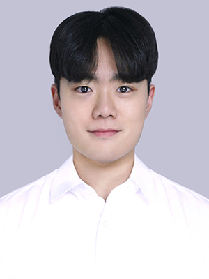

KRAFTON — Deep Learning Engineer / Researcher2025.05 – present
ML R&D Team, Applied DL Dept., AI Research Center
Research Scientist at LG AI Research
Seoul, South Korea
Ph.D. in Statistics & Data Science, Yonsei University

I am a Research Scientist at LG AI Research. I received my integrated M.S./Ph.D. in Statistics and Data Science at Yonsei University, co-advised by Prof. Taeyoung Park (DSLab) and Prof. Kibok Lee (ML Lab). Previously, I was a Deep Learning Engineer / Researcher at KRAFTON and a research intern at Naver Cloud (HyperCLOVA X) and SK Telecom.
My research centers on deep learning for time series — including representation/self-supervised learning, diffusion models, foundation models and LLMs for time series, financial time-series modeling, and multimodal / vision-language learning. I also write about AI on my blog (1,400+ posts).
C Conference W Workshop J Journal · * equal contribution † co-corresponding author
Under review. MAD-GL2: Multimodal Adaptive Dynamic Graph Learning with Global and Local Features for Multivariate Time Series Forecasting — Seunghan Lee*, Kibok Lee*, Taeyoung Park.
Reviewer